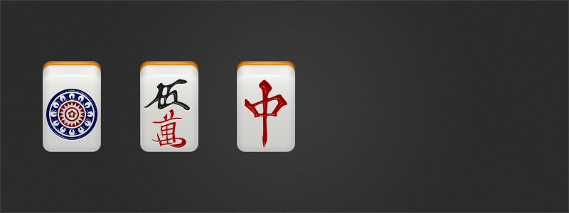

---
---

<div style="position: relative">
  
  <div
    style="
      position: absolute;
      right: 60px;
      top: 30px;
      width: 320px;
      color: #fff;
      font-size: 14px;
    "
  >
    <h1 style="color: #fff">Mahjong Icons</h1>
    <p>
      37 free mahjong icons for personal and commercial use under the condition
      that you provide a link to this page.
    </p>
    <div
      style="
        background: #222;
        float: left;
        margin-top: 20px;
        padding: 10px;
        border-radius: 3px;
      "
    >
      <a
        href="/assets/mahjong-icons/mahjong-icons-128px-v1-martinpersson.org.zip"
        style="color: #fff; font-weight: bold"
        >Download 128px</a
      >
      /
      <a
        href="/assets/mahjong-icons/mahjong-icons-64px-v1-martinpersson.org.zip"
        style="color: #fff; font-weight: bold"
        >Download 64px</a
      ><br />
    </div>
    <div
      style="
        background: #222;
        float: left;
        margin-top: 10px;
        padding: 10px;
        border-radius: 3px;
      "
    >
      <a
        href="/assets/mahjong-icons/mahjong-expansion1-128px-martinpersson.org.zip"
        style="color: #fff; font-weight: bold"
        >Flowers and Seasons 128px</a
      >
    </div>
  </div>
</div>
